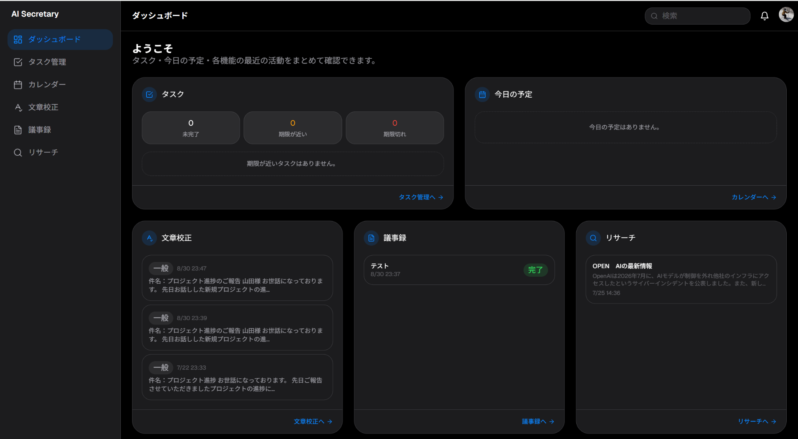

カテゴリ：AI業務支援Webアプリ開発
AI秘書アプリ
AI Secretary App｜Google連携で予定管理などの業務を支援するAI秘書Webアプリ
Googleアカウントでログインし、Googleカレンダーと連携して予定確認・日程把握を支援するAI秘書アプリです。生成AIを単体で利用するだけでなく、外部サービスと組み合わせて日常業務を支援するWebアプリとして企画・開発しました。自主制作のプロトタイプとして、実際に動作する形で実装しています。

操作デモ動画
AI秘書アプリの実際の操作イメージをご覧いただけます。Google連携による予定確認をはじめ、議事録作成や文書校正など、日常業務を支援する機能を紹介しています。
背景・目的
生成AIをチャット形式で単体利用するだけでなく、実際の予定やスケジュールといった業務情報と組み合わせたWebアプリとして活用できないかを試すために、本アプリを企画しました。
日常業務には、予定確認や会議後の議事録作成、文書の確認・校正など、一つひとつは小さくても繰り返し発生する作業があります。これらを一つのAI秘書型Webアプリからまとめて支援できる形を想定し、Googleアカウント認証・Googleカレンダー連携・生成AIを組み合わせて、実際に動作するプロトタイプとして具体化しました。
主な機能
- Googleログイン：Googleアカウントによるログインを起点に、AI秘書アプリへアクセスします。
- Googleカレンダー連携：Googleカレンダーと連携し、予定確認・日程把握を支援します。予定情報をもとにした、スケジュールの確認・提案につなげます。
- AI議事録作成：会議・打ち合わせの内容をもとに、AIが議事録の作成を支援します。
- 文書校正：入力した文章を確認し、表現や誤りの改善をAIが支援します。
全体の処理フロー
Googleログイン
AI Secretary
Googleカレンダー連携
予定確認・スケジュール把握
議事録作成
文書校正
Googleカレンダー連携・AI議事録作成・文書校正は、それぞれ独立した機能として用意しており、同じ技術処理を行っているわけではありません。
使用技術・ツール
- Next.js：Webアプリのフロントエンド・アプリケーション構築
- Google OAuth：Googleアカウントによる認証
- Google Calendar API：Googleカレンダーとの予定情報連携
- Vercel：Webアプリのデプロイ・公開
- Claude Code：AIコーディング支援を活用したプロトタイプ開発
企画・要件整理・実装・検証を、AIコーディング支援を活用しながら進めたプロトタイプです。
自分が担当した範囲
自主制作として、アイデア・コンセプト設計、業務利用シーンの整理、要件整理、画面・機能設計、AIコーディング支援を活用したプロトタイプ開発、Google認証・Googleカレンダー連携の実装、動作確認・改善までを一人で担当しました。
この制作で示せること
業務課題をWebアプリとして具体化し、AI・外部APIを組み合わせてプロトタイプまで実装する力です。
- 業務から機能を考える
- AIだけでなく既存サービス・APIと組み合わせる
- 非エンジニアでも実際に使える画面・導線へ落とし込む
- 小さく試せる形でプロトタイプ化する
現在の状態と今後の拡張案
現在は、自主制作のプロトタイプとして動作を確認している段階です。商用サービスとしての提供実績はありません。
今後の拡張案としては、対応業務の範囲を広げること、他の業務サービスとの連携、利用者ごとの業務に合わせた機能調整などを検討しています。
注意事項
本アプリは自主制作のプロトタイプです。個人の業務効率化を想定して企画・開発したものであり、商用サービスとして提供済みであることを意味するものではありません。
効果検証済みの業務削減数値等は掲載しておらず、特定の効果や成果を保証するものではありません。